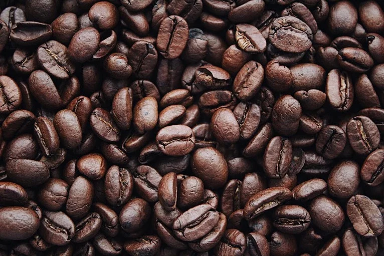
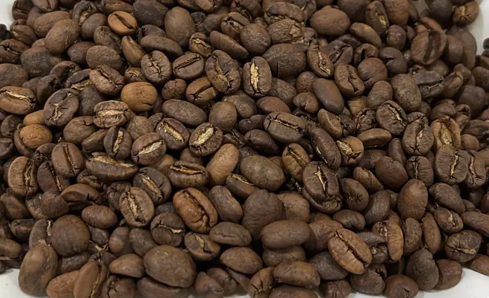

KOPI NUSANTARA
Cita Rasa Kopi Indonesia
Menikmati kekayaan kopi Nusantara dari berbagai daerah Indonesia dalam setiap tegukan.
Explore Our CoffeeProducts
Discover the authentic taste of Indonesian coffee beans, crafted with carefully selected beans from across the archpelago.

Robusta Gayo Coffee (Medium Roasted, Honey)
Nutty and buttery coffee beans from the highlands of Aceh
Rp200.000/kg
Arabica Toraja Coffee(Medium Roasted, Washed)
Rich and earthy coffee beans with a distinctive taste from Sulawesi
Rp325.000/kg
Arabica Kintamani Coffee(Medium Roasted, Washed)
Fresh and fruity coffee beans from the mountains of Bali
Rp325.000/kg
Robusta Flores Bajawa Coffee(Medium Roasted, Washed)
Balanced coffee with a warm aroma from Flores, East Nusa Tenggara
Rp200.000/kg
Arabica Mandailing Coffee (Medium Roasted, Washed)
Full-bodied coffee with a smooth finish from North Sumatra
Rp330.000/kg
Liberika Coffee (Roasted)
Unique Indonesian coffee with a bold and distinctive character.
Rp500.000/kgOur Partners
Bridging farmers, roasters, and avid coffee enjoyers throughout Indonesia.
Frequenly Asked Question (FAQ)
Find frequenly asked question about us here.
Kopi Nusantara is a coffee brand that showcases Indonesian coffee from various regions across the archipelago, allowing coffee lovers to experience the different flavors and characteristics of Indonesian coffee.
Our coffee comes from various regions in Indonesia, including Aceh, Sulawesi, Bali, Flores, North Sumatra, and Kalimantan.
Kopi Nusantara offers several varieties, including Robusta Gayo, Arabica Toraja, Arabica Kintamani, Robusta Flores Bajawa, Arabica Mandailing, and Liberika Coffee.
Arabica and Robusta are different species of coffee with different characteristics. Arabica generally has a more complex and nuanced flavor, while Robusta tends to have a stronger and more robust character.
Kopi Nusantara
The real coffee from Indonesia.
About Us
The story behind
Indonesia is a country that is full of coffee culture. From the scent till the taste, each region offers a different flavour.
Through Kopi Nusantara, we want to give a chance for many other nations to enjoy the abundance of coffee flavour that is produced by Indonesia. For us, coffee is not just a drink, but it is a chance to talk, know each other, and even relax in the time we have.
Jelajahi Kopi KamiKnow Local Coffee
Invite coffee lovers to enjoy Indonesia's coffees.
How it is Done
Learn the process from picking coffee beans until extracting it for a coffee to enjoy.
Share a story
Enjoying time together through drinking one cup of coffee at a time.